5．奇点理论
19世纪中期，常微分方程的研究走上了一个新的历程。存在定理和斯图姆-刘维尔理论都预先假设在考虑解的区域内，微分方程包含解析函数或至少包含连续函数。另一方面，某些已经考虑过的微分方程，如像贝塞尔方程、勒让德方程、超几何方程，当把它们表示得使二阶导数的系数为1时，它们就有奇异的系数，在奇异点的邻域内级数解的形式是特别的，尤其是第二个解。所以数学家们便转而研究奇点邻域内的解，也就是一个或多个系数在其上奇异的那种点的邻域内的解。一个点，所有系数在其上至少连续而通常是解析的，就叫做常点。
在奇点邻域内的解可以用级数得出，关于级数的适当形式的知识必须在计算它之前就掌握。这知识只能从微分方程得到。这个新问题由富克斯（Lazarus Fuchs，1833—1902）在1866年的一篇论文（见下面）中描述：“在科学的现状下，微分方程的理论问题，不像从微分方程本身推演出它的积分在全平面各点即复变量的所有值上的性态那样，那么多地把给定微分方程归结为求积分问题。”对于这个问题，高斯关于超几何级数的工作指明了道路。先导者是黎曼和富克斯，后者是魏尔斯特拉斯的学生和他在柏林的继承者。这方面研究得到的理论叫做线性微分方程的富克斯理论。
在这个新领域中，人们的注意力集中于形为
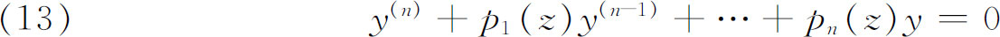
的线性微分方程，其中pi（z）除在孤立奇点外是复变数z的单值解析函数。这个方程之所以受到注意，是因为它的解包括所有初等函数甚至某些高等函数，例如我们以后将要谈到的模函数和自守函数。
在考虑奇点上和奇点邻域内的解之前，我们指出一个基本定理，它是由富克斯直接证明的(33)，虽然富克斯自认得益于魏尔斯特拉斯的讲演，但这定理确是从柯西关于常微分方程组的存在性定理推导出来的。如果系数p1，…，pn在点a及其某一邻域内解析，并且如果在z＝a给出了y和y的头n-1阶导数的任意初值，那么y就有以z表示的形如
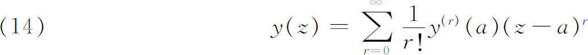
的唯一的幂级数解。富克斯给柯西的结果增添的是：这级数在以a为中心、pi（z）在其中解析的任何圆内绝对并一致收敛。从此推得这解仅能在系数为奇异的地方具有奇异性。
奇点邻域内的解的研究是由布里奥和布凯起始的(34)。因为他们关于一阶线性方程的结果很快就得到了推广，所以我们将考虑更为普遍一些的论述。
为了知道解在奇点邻域内的性态，黎曼提出了一条非凡的途径。虽然在（13）中假定pi（z）除了在孤立奇点外是单值解析函数，解yi（z）除了可能在奇点外都是解析的，但在z值的整个区域内一般说来并不是单值的。假定有一个基本解系，yi（z）（i＝1，2，…，n），即上面定理中指明类型的n个独立解。那么通解就是
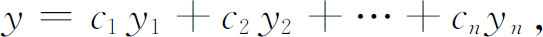
其中ci是常数。
如果现在我们探索一下一个解析的yi沿着一条含有奇点的闭路径的性态，那么虽然yi仍保持为微分方程的解，但它的值要变到同一函数的另一分支上去。因为任何解都是n个特解的线性组合，所以改变了的yi，不妨记为
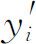
，仍是yi的线性组合。这样，我们得到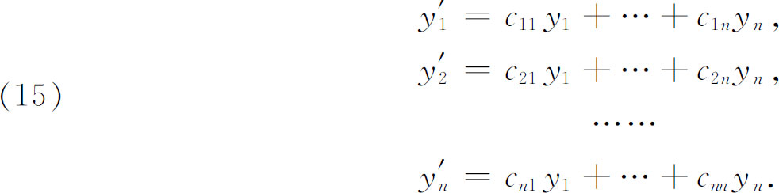
这就是说，当每个yi沿包含奇点的一条闭路径运动时，y1，…，yn就经受一定的线性变换。对于绕每一奇点或绕多个奇点组合的任一闭路径，就会出现这样一个变换。这些变换的集合形成一个群(35)，按埃尔米特取的名词(36)，这个群叫做微分方程的单值群。
黎曼求得奇点邻域内解的特征的途径见于他在1857年的论文《对可用高斯级数F（α，β，γ，x）表示的函数的理论的补充》［Beiträge zur Theorie der durch die Gauss'sche Reihe F（α，β，γ，x）darstellbaren Functionen］(37)。如高斯所知，超几何微分方程有三个奇点0，1，∞。这时黎曼对复的x证明了为得到二阶微分方程的特解在奇点附近的性态的一些结论，不必知道微分方程本身，而只需知道当自变量沿着围绕三个奇点的诸闭路径变动时，两个独立解是怎样变动的。这就是说，对于每个奇点，我们必须知道变换
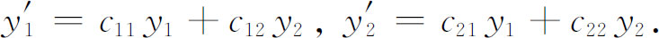
这样，黎曼处理用微分方程定义的函数的思想就是从关于单值群的知识导出这些函数的性质。他的1857年的论文处理了超几何微分方程，但是他的计划是讨论带代数系数的n阶线性微分方程。黎曼在1857年写的一个没有发表的片断，直到1876年才见之于他的全集中(38)，在这片断里黎曼考虑了比有三个奇点的二阶方程更为普遍的方程。因此他假定有n个函数，除了在某些任意指定的点（奇点）上之外，是一致、有限和连续的，并且当z绕这种点走一闭回路时经受一个任意指定的线性替换。然后他证明这种函数系要满足一个n阶线性微分方程，但是他没有证明这些分支点（奇点）和这些替换可以任意选择。他的这工作在此处是不完全的，留下了叫做黎曼问题的未解决问题：在复平面上给定m个点a1，…，am，每点结合一个形如（15）的线性变换，在关于这些奇点的单值群的性态的基本假定的基础上（以这些性质不是已经确定为限），要证明，满足一个以ai为奇点（支点）的n阶线性微分方程的函数类y1，…，yn就确定了，并使得当z绕ai点的闭路径走一周后，这些yi就经受一个与ai联系着的线性变换。
以黎曼1857年关于超几何方程的论文为指导，富克斯把奇点的工作做得更深入了。从1865年开始(39)富克斯和他的学生着手研究n阶微分方程，而黎曼已发表的还只是关于高斯超几何微分方程问题。富克斯没有沿着黎曼的途径走，而直接研究微分方程。富克斯不但把线性微分方程，而且把微分方程的整个理论普遍地移植到复函数论的领域。
富克斯在上面提到的论文内给出了他关于常微分方程的主要工作。他从以x的有理函数为系数的n阶线性微分方程出发，通过仔细地考察形式上满足这方程的级数的收敛性，他发现方程的奇点是固定的，即不依赖于积分常数，而且可以在积出之前就找到，因为它们就是微分方程的系数的极点。
接着他证明，当自变量z描出围绕奇点的一个回路时，基本解系就经受一个常系数的线性变换。从解的这个性态他导出了在围绕这点并伸展到邻近奇点的圆形区域内正确的解的表达式。这样，他就建立除在某些点的邻域外都是一致、有限且连续的n个函数的函数系的存在性，并且当变量z走过绕这些点的闭回路时，这函数系就经受一个常系数的线性替换。
然后，富克斯考虑：形如（13）的微分方程必须具有什么性质，才能使其解在奇点z＝a处具有形状
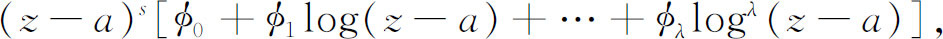
这里s是某个（可以进一步指明的）常数，øi是在z＝a的邻域内单值的函数，可能有有限阶极点。他的答案是：一个充要条件为
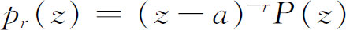
，其中P（z）在z＝a及其邻域内是解析的。这样，p1 （z）有一阶极点等。这样的点a叫做正则奇点（富克斯叫它为决定性的点）。富克斯还研究过一类形如（13）但较为特殊的方程。这种类型的齐次线性方程，当它在扩充了的复平面（包括无穷远点∞）上在最坏的情况下只有正则奇点时，就称为是富克斯型方程。在这种情形下，pi（z）必须是z的有理函数。例如，超几何方程在z＝0，1，∞处就有正则奇点。
但是对微分方程在给定点的邻域内的积分的研究不一定给出积分本身。这种研究已作为探讨完全积分的出发点。由于富克斯做了大量研究，所以数学家们已经成功地扩大了能明显积分的线性常微分方程类。以前仅是常系数的n阶线性方程和勒让德方程
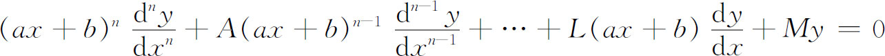
可以积分，后者要用到变换ax＋b＝et。新的方程中可以积分的是那样的方程，其积分都是z的一致性（单值）函数。通过微分方程的奇点的研究，人们认识到那些积分都具有这个性质。这样得到的一般积分通常是新的函数。
除了特殊类型微分方程的各种积分的普遍结果外，对于在z＝a点处有正则奇点的方程，它的解还有利用级数的途径。如果原点是这样的点，那么方程必定有形式
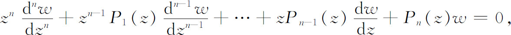
其中Pi（z）在z＝0及其邻域内解析。在这种情形下，人们可以得到n个基本解，用关于z＝0处的级数形式表示，并证明对z值的某些范围这级数收敛。这级数有形式
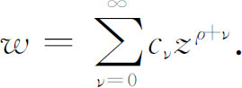
而对每个解，ρ与cν是可以确定的。这结果属于弗罗贝尼乌斯（Georg Frobenius，1849—1917）(40)。
19世纪的后半期仍在研究黎曼问题，但没有成功，直到1905年(41)，希尔伯特和凯洛格（Oliver D．Kellogg，1878—1932）(42)，借助于当时已发展了的积分方程理论才第一次给出完全解。他们证明了产生单值群的变换可以任意地预先指定。